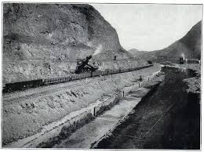

Engineering and Labor
U.S. engineers like John Stevens and George Goethals designed a revolutionary system of locks that raised ships 85 feet across the isthmus. But the real backbone was the diverse workforce — over 75,000 laborers, many from the Caribbean, who worked under grueling, segregated conditions.

Excavation of the Culebra Cut, 1913 — U.S. Army Archives

Caribbean workers in the Canal Zone, early 1900s — Smithsonian